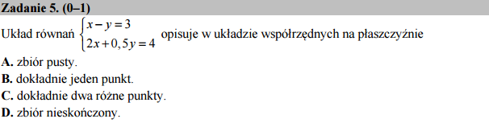

Jak implicit_plot pomoże graficznie zinterpretować rozwiązania układu równań¶
{kind=link}
Pytanie jest o liczbę rozwiązań układu równań. Ponownie możemy uzyskać odpowiedź od systemu rozkazując komputerowi rozwiązać nasz układ:
Jednak ponieważ nie potrzebne są nam wartości pierwiastków tego układu równań, to możemy posłużyć się metodą graficzną! Rozwiązania układu równań to miejsca przecięć się wykresów obu krzywych. Narysujmy wykresy i zobaczmy czy udzielimy na podstawie ich oględzin poprawne odpowiedzi:
Dlaczego implicit_plot?
implicit_plot jest narzędziem do rysowania tak zwanych
funkcji uwikłanych, czyli w postaci \(F(x,y)==0\). „Pod maską”
jest to o wiele bardziej złożona machineria od zwykłego plot, ale
dla nas ma on pewne zalety. Po pierwsze nie musimy rozwiązywać
równania na \(y\). Po drugie mamy pewność, że wykres nie
wyjdzie z zadanego obszaru. Implicit plot potrafi narysować też
krzywe które nie są wykresami funkcji. Sprawdź sam, na przykad
rysując okrąg \(x^2+y^2==1\) lub prostą \(x==0\).
plot( f(x),(x,x1,x2))rysujące wykres \(f(x)\) wprzedziale \(x\in(x_1,x_2)\). Zakresy osi \(y\) ustalane są automatycznie.
Czy możemy użyć zwykłego plot?
Oczywiście! Rozwiążmy oba równania ze względu na \(y\):
Teraz możemy narysować funkcję standardową procedurą rysującą wykresy funkcji jednej zmiennej:
Ale zaraz! Wyszły inne wykresy! A może się nam to wydaje? Zmieńmy zakres wartości funkcji na taki jak po pierwszym przypadku i bedzie to samo. Wystarczy zmienić przedostatnią linijke na:
p += plot(-4*x+8,(x,-3,3),color='red',ymax=3,ymin=-3,aspect_ratio=1)